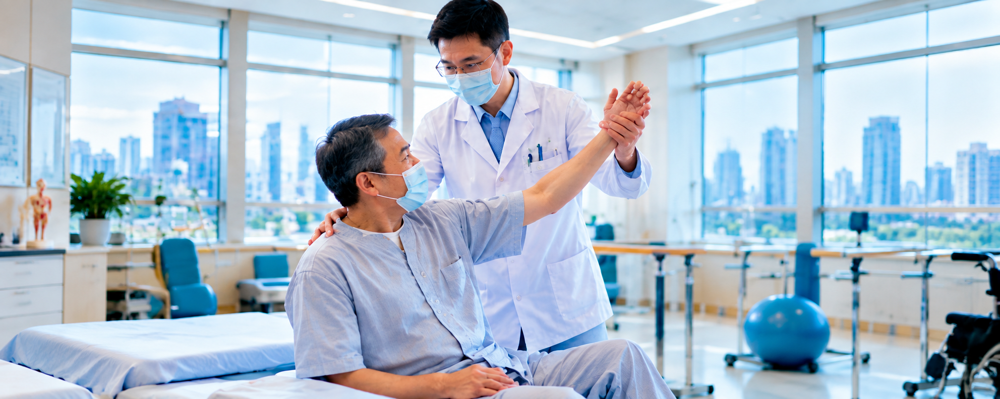

Oral Tissue Regeneration
Stem cell supported oral tissue regeneration focused on supporting the repair of gum tissue, alveolar bone and damaged oral structures.
Discover next-generation regenerative dental care in China, combining cellular technology and state-of-the-art digital dentistry.
We help coordinate your full dental journey with top-tier dental hospitals and specialist dentists.
From your first consultation and diagnostic scans to your personalised treatment schedule, every plan is customised by dental specialists according to your oral condition.
Advanced treatment options coordinated with dental hospitals and specialist dentists in China.
Stem cell supported oral tissue regeneration focused on supporting the repair of gum tissue, alveolar bone and damaged oral structures.
Platelet-based regenerative support used as part of specialist-led dental care and healing plans.
Specialist assessment and personalised restorative planning for gum and jawbone conditions.
Digital planning technology to visualise and personalise aesthetic dental treatment.
Advanced three-dimensional dental imaging to support detailed diagnosis and treatment planning.
Digital dentistry workflows for precise design and efficient production of dental restorations.
Specialist implant consultation, diagnostic planning and coordinated treatment pathways.
Personalised cosmetic dental planning designed around your smile, teeth and oral condition.
Comprehensive oral health assessment to identify needs and build an appropriate treatment plan.
This biological approach focuses on supporting your body’s natural healing at cellular level, to repair gum tissue, alveolar bone and damaged oral structures.
We arrange your consultation, diagnostic scans and personalised treatment schedule. Every plan is customised by dental specialists according to your oral condition.
Request Dental Consultation
Contact our team to coordinate your specialist consultation, diagnostics and personalised treatment schedule.